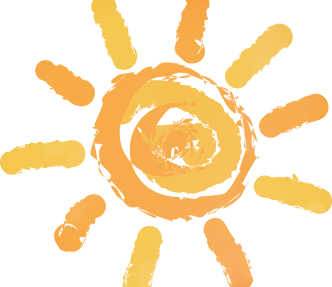
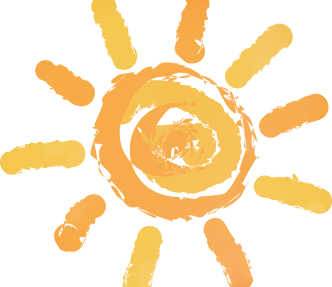

neuro weather
forecast
нейросиноптик может подсказывать погоду, исходя из данных в интернете
Читать подробнее нейросиноптик может подсказывать погоду, исходя из данных в интернете
Читать подробнее Меня зовут Лера,
я перешла в 9 класс,
увлекаюсь дизайном.
Интересный факт:
Я обожаю гуманитарные
школьные предметы
Нейросиноптик - подсказывает погоду c
наивысшей точностью, исходя из данных в интернете
Прогармма была написана на языке Пайтон
Здесь я научилась писать голосового помощника и создавать сайты, это был очень увлекательный процесс.
Благодарю школу коди за такую возможность и прекрасное времяпровождение.
Больше всего мне было интересно создавать сайт, это нелегкий процесс, но мы вместе быстро смогли это преодолеть.
Эти занятия развили во мне желание продолжать развиваться в этой сфере, в будущем хочу вписать программирование
в свою жизнь как хобби, а может быть даже как основную деятельность
Спасибо школа Coddy